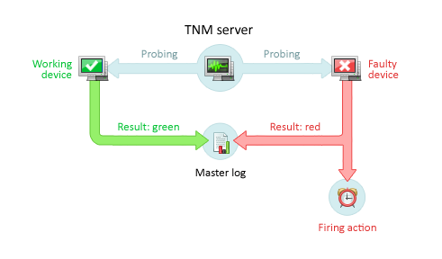

LVS
test Module1.0.0


How it works
Monitor is a special type of object that watches certain aspects of service operation, server health, or a file system. You create monitors, fine-tune them to meet your individual demands, and run them, and they display the status of your network in real time.
If any parameter deviates from its normal state, the monitor executes an action set predefined by the user, e.g. plays a sound, sends a detailed description of the incident via e-mail or IM, reboots the remote PC, or launches an application.
The monitor log contains the full history of all executed actions and readings from all the monitors, which will prove to be valuable data in everyday network management.
Free network management system
Devices and servers can be added manually to the network monitoring project, but it's a lot quicker and easier done with the network scanner. Specify some IP ranges, and all the devices of interest will appear in your project in a few seconds, ready to be monitored.
The all-seeing eye
Total Network Monitor is linked to the outside world with probes. They provide TNM with all the data for analysis. There's a variety of probes for any occasion. Send a request via network protocol for server monitoring, inspect a service, check event log, or value of Windows registry key, find a string in a file on a remote computer, etc. — all of these tasks are a breeze for TNM.
Available probes
- Internet:
- ICMP
- TCP
- HTTP
- FTP
- SMTP
- POP3
- IMAP
- Telnet
- Windows:
- Event log
- Service state
- Registry state
- System performance
- File:
- File existence
- File size
- File compare
- File count
- File CRC32
- File content
- Disk space
Notifications and event history
When something goes wrong, enter actions. They notify you so that you can move ahead and fix everything in time. They can give first aid as in rebooting a service or a remote PC, firing up an application, or running a script. Then again, they can simply append an entry to a dedicated log.
Available actions
- Alerts:
- Message box
- Popup window
- Play sound
- Write to file
- Messages:
- Jabber
- Event log
- Measures:
- Launch application
- Run script
- Reload service
- Reboot computer
All the actions taken and the changes to the observed parameters are logged continuously, forming a clear picture of the network status over time.
Free network mapping software
Build a clear plan of your monitoring project in the form of a network map: arrange the icons of your devices on the broad white canvas and render the network topology with links. If a device needs your attention, it lights up in red directly on the map.